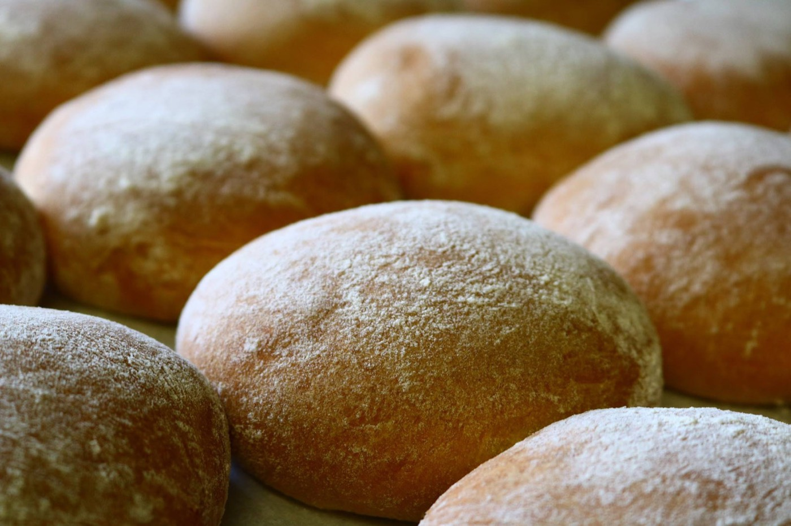

01 · Bread
Loaves & buns
Our first bread was Garlic Dill. Since then the sandwich loaves have gone from Cranberry Ginger to Blueberry Lemon, Onion Cheese and even Pepperoni. The burger buns follow a Mennonite bread recipe.
“I think the thing I love to make most is baked goods.”